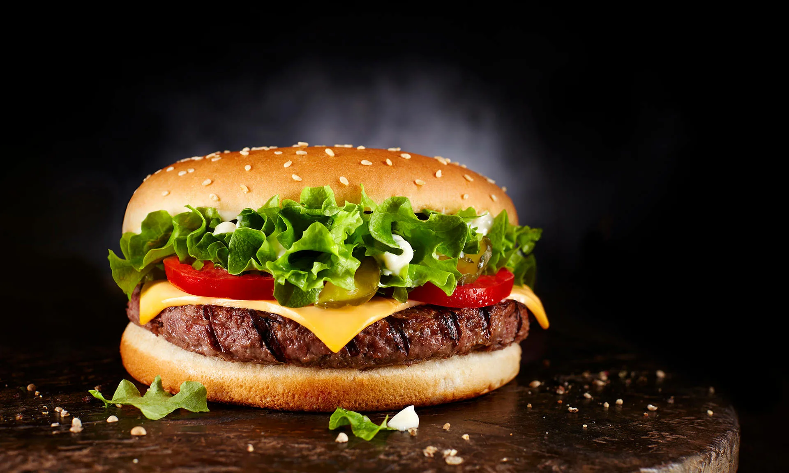

Урок 2 Задание 2
Рейтинг блюд
|
Фото |
Наименование блюда |
Оценка от 1-5 баллов |
|
 |
Пицца |
2 |
|
 |
Бургер |
4 |
|
 |
Kартошка фри |
3 |
|
 |
Kуриные крылышки |
5 |
Список продуктов
Список фильмов с Леонардо ДиКаприо
- «Титаник» (1997) - мелодрама
- «Остров проклятых» (2010) - триллер
- «Начало» (2010) - фантастика
Список с Номерами телефонов
- +7(499) 254-15-05
- +7(499) 254-15-06
- +7(499) 254-15-07